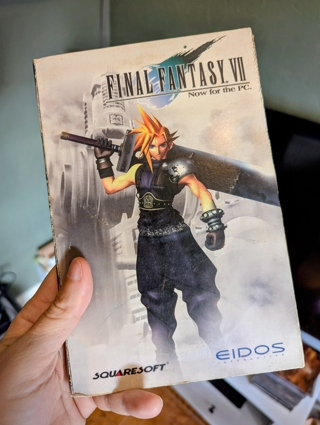
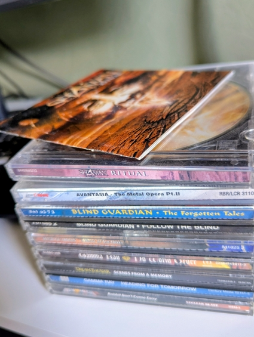

I Miss Owning Things
June 28, 2026
I think I'm getting old. Have I quietly become my dad? Old man ranting warning.
Lately I've been catching myself getting annoyed at technology. Not because I dislike it - quite the opposite.
I've spent nearly thirty years working as a software developer. I even survived the millennium bug. I still remember staying at the office until crazy o'clock with the rest of the team, adding two extra digits to every date field in a gigantic COBOL financial system and then chasing down all the places that needed changing. It was stressful at the time, but it's one of those stories I look back on with a smile now.
I saw the rise of the internet, smartphones, cloud computing, and now AI. You know AI, that glorified search-box, shitposting machine they convinced us is the next big thing?
Somewhere along the way, I started looking back at around 2005 with a surprising amount of fondness. We were so optimistic back then.
Technology felt like it existed to make our lives better. Today I'm not so sure.

One thing that's changed more than anything else is ownership. I had the privilege of being a teenager in the 90s. The time when buying a CD was an event.
I'd bring it home, lock myself in my room, put on my headphones, and listen to the whole album while reading every word in the booklet. When I was done that CD was mine. I could lend it to a friend or I could play it twenty years later. Nobody could decide I wasn't allowed to listen to it anymore.
Then came subscriptions. The pitch was brilliant. Why own ten albums when you can have ten million? Why keep DVDs on a shelf when you can stream thousands of movies instantly? Convenience won. I signed up too, we all did.
But somewhere along the way, ownership quietly disappeared. Now we rent music, films, software, and increasingly even games. Renting isn't new, of course. We rented VHS tapes and games back then too. The difference is that renting used to be the exception. Today it feels like the default.
Even games are starting to go the same way. The irony isn't lost on me. As an indie developer, I release my games digitally. Platforms like Steam have made life dramatically easier for small developers like me. I probably wouldn't have released games without them.
But I still can't help feeling a little sad when I see a "physical edition" that's nothing more than a download code inside a plastic box.
Maybe I'm just getting old. Or maybe I'm starting to realise that convenience always comes with a price and that price is ownership.

On my last visit to my dad's house I brought home an old box filled with my teenage belongings. Buried inside was Ritual by the Brazilian band Shaman, one of my favourite heavy metal albums of all time.
The other evening, instead of throwing it on as background music while coding or working out, I sat down, opened the booklet, read the lyrics, and listened to the album from beginning to end.
And you know what? It felt fantastic. It reminded me that music used to be an experience, not just something to fill the silence. Buying an album was much more than owning the songs, it was about spending time with them. Maybe that's what I miss the most. It's the little rituals that made those things feel special in the first place.